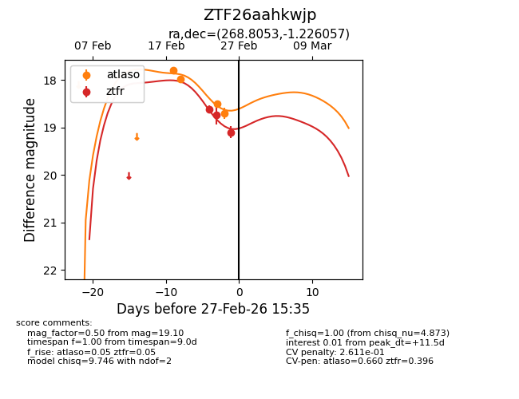
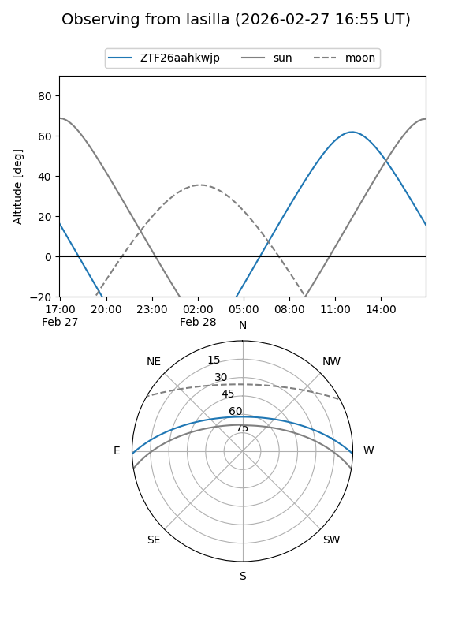
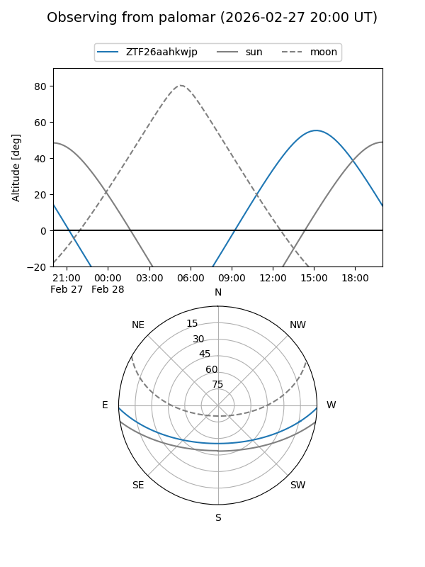
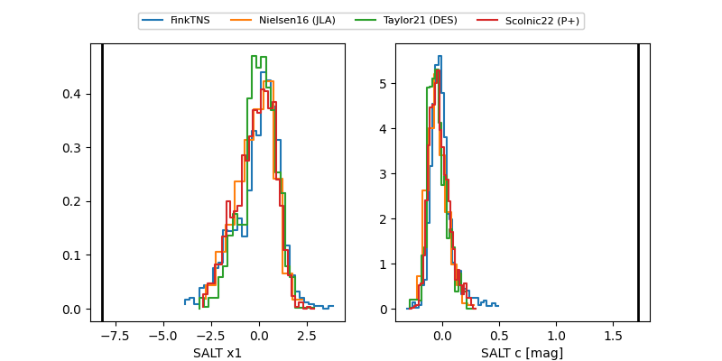

ZTF26aahkwjp
Target ZTF26aahkwjp at 2026-02-27 15:39
Aliases and brokers:
FINK: link
Lasair: link
ALeRCE: link
alt names
ZTF26aahkwjp (ztf,fink_ztf)
Coordinates:
equatorial (ra, dec) = 268.8053,-1.22606
equatorial (HMS+DMS) = 17:55:13.28,-01:13:33.80
galactic (l, b) = (25.3120,+11.90662)
Flags:
likely cv
Photometry:
last atlaso=18.70, ztfr=19.10
4 atlaso, 3 ztfr detections
Lightcurve

Visibility


Additional plots
